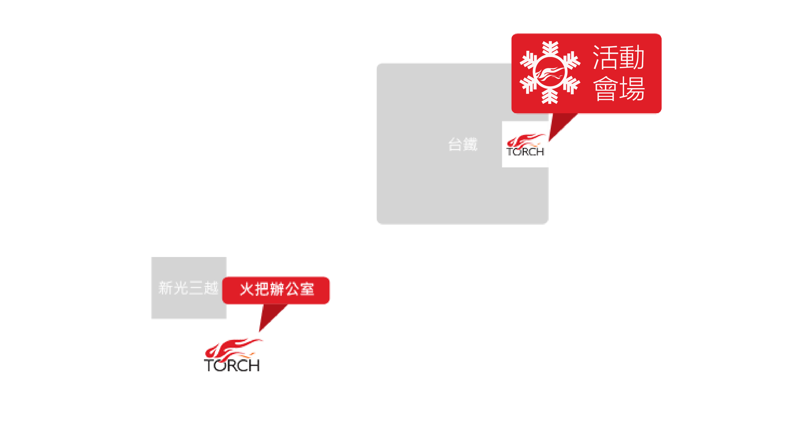

聖誕兒童劇－黑豹小威的祕密
2014 Torch Church Christmas Play for Children
[Leopard Xiao-Wei's Secrets]
劇情簡介 |
黑豹小威這個星期陷入人生最焦慮的狀態！功課非常好的他，考試考壞了。跟媽媽先「借」一下的錢，居然鬧大了！連警察都來家裡調查。最慘的是，他的爸爸媽媽即將出國，要把他和雙胞胎弟弟小風送到他最害怕的黑虎阿姨家借住。眼看成績單簽名交回的時間就快到了，黑豹小威究竟該怎麼辦呢？他的祕密會不會被發現呢？
活動資訊 |
第一場 2014/12/20 (六) 10:30-12:00 (10:00入場)
第二場 2014/12/20 (六) 13:00-14:30 (12:40入場)
參加對象 |
1. 適合3-12歲兒童。
2. 國小4年級(含)以下，需由大人陪同參加。
參加辦法 |
免費進場，不需索票，座位有限，敬請把握
活動地點 |
臺北車站六樓演藝廳 (由東二門進入)

交通方式 |
捷運：可搭乘 2 淡水信義線 或 5 板南線 至臺北車站。
汽、機車：可停至臺北車站西側地下收費停車場。
公車：下車站牌 (站名：臺北車站-忠孝)